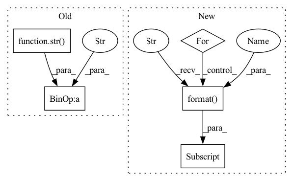

Pattern ID :2682

Before Change
results, avg_results = self._bleu(generate_corpus=generate_corpus, reference_corpus=reference_corpus)
for index in range(len(self.n_grams)):
bleu_dict[str(self.n_grams[index])].append(results[index])
bleu_dict[str(self.n_grams[index]) + "-avg"].append(avg_results[index])
return bleu_dict
def __str__(self):
After Change
bleu_dict["bleu-{}-avg".format(n_gram)].append(results["bleu-{}-avg".format(n_gram)])
else:
results = self._bleu(generate_corpus=generate_corpus, reference_corpus=reference_corpus)
for n_gram in self.n_grams:
bleu_dict["bleu-{}".format(n_gram)].append(results["bleu-{}".format(n_gram)])
bleu_dict["bleu-{}-avg".format(n_gram)].append(results["bleu-{}-avg".format(n_gram)])
return bleu_dict
def __str__(self):
In pattern: SUPERPATTERN
Frequency: 3
Non-data size: 5
Instances
Fragment ID: 10902278
Project Name: rucaibox/textbox
Commit Name: e4fe6d053c45d18704007c0ef18c340a2e5e935a
Time: 2021-04-24
Author: 602525931@qq.com
File Name: textbox/evaluator/bleu_evaluator.py
M Class Name: BleuEvaluator
N Class Name: BleuEvaluator
M Method Name: _calc_metrics_info(3)
N Method Name: _calc_metrics_info(3)
M Parent Class: AbstractEvaluator
N Parent Class:
M File Name: textbox/evaluator/bleu_evaluator.py
N File Name: textbox/evaluator/bleu_evaluator.py
M Start Line: 100
M End Line: 120
N Start Line: 78
N End Line: 98
'>
Before Change
weight[n_gram - 1] = 0.0
avg_weight = [1. / n_gram] * n_gram
avg_weight.extend([0. for i in range(max(self.n_grams) - n_gram)])
weights[str(n_gram) + "-avg"] = tuple(avg_weight)
bleu = SelfBLEU(generate_corpus, weights)
scores = bleu.get_score()
After Change
for n_gram in self.n_grams:
score = np.array(scores["self-bleu-{}".format(n_gram)])
results["self-bleu-{}".format(n_gram)] = score.mean()
for n_gram in self.n_grams:
score = np.array(scores["self-bleu-{}-avg".format(n_gram)])
results["self-bleu-{}-avg".format(n_gram)] = score.mean()
return results
def _calc_metrics_info(self, generate_corpus, reference_corpus=None):
'>
Fragment ID: 10902282
Project Name: rucaibox/textbox
Commit Name: e4fe6d053c45d18704007c0ef18c340a2e5e935a
Time: 2021-04-24
Author: 602525931@qq.com
File Name: textbox/evaluator/selfbleu_evaluator.py
M Class Name: SelfBleuEvaluator
N Class Name: SelfBleuEvaluator
M Method Name: _self_bleu(2)
N Method Name: _self_bleu(2)
M Parent Class: AbstractEvaluator
N Parent Class:
M File Name: textbox/evaluator/selfbleu_evaluator.py
N File Name: textbox/evaluator/selfbleu_evaluator.py
M Start Line: 64
M End Line: 82
N Start Line: 43
N End Line: 61
'>
Before Change
for n_gram in self.n_grams:
score = np.array(scores[str(n_gram)])
results.append(score.mean())
score = np.array(scores[str(n_gram) + "-avg"])
avg_results.append(score.mean())
return results, avg_results
After Change
for n_gram in self.n_grams:
score = np.array(scores["bleu-{}".format(n_gram)])
results["bleu-{}".format(n_gram)] = score.mean()
for n_gram in self.n_grams:
score = np.array(scores["bleu-{}-avg".format(n_gram)])
results["bleu-{}-avg".format(n_gram)] = score.mean()
return results
def _calc_metrics_info(self, generate_corpus, reference_corpus):
'>
Fragment ID: 10902281
Project Name: rucaibox/textbox
Commit Name: e4fe6d053c45d18704007c0ef18c340a2e5e935a
Time: 2021-04-24
Author: 602525931@qq.com
File Name: textbox/evaluator/bleu_evaluator.py
M Class Name: BleuEvaluator
N Class Name: BleuEvaluator
M Method Name: _bleu(3)
N Method Name: _bleu(3)
M Parent Class: AbstractEvaluator
N Parent Class:
M File Name: textbox/evaluator/bleu_evaluator.py
N File Name: textbox/evaluator/bleu_evaluator.py
M Start Line: 67
M End Line: 86
N Start Line: 46
N End Line: 64